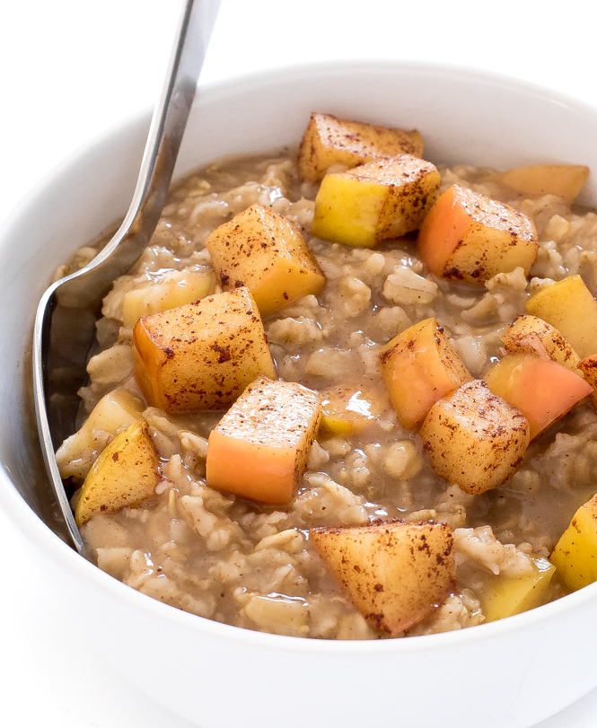

Cinnamon Apple Oatmeal

Description
This is an easy and delicious take on Oatmeal.
Ingredients
- 100g Old fashioned oatmeal
- 2g cinnamon
- 1 whole medium sized apple (50g to 70g)
- 15g brown sugar
- 2g salt
- 35g water
- 35g milk(optional)
Steps
- Fill a bowl with Oatmeal and water.
- Microwave for 2 minutes.
- While it is microwaving, dice up the apple into small cubes.
- Mix the apple and the brown sugar in a different bowl.
- Once it the oats are done microwaving mix in the salt and apples.
- Proceed to microwave for 1 more minute.
- Add milk after done cooking!